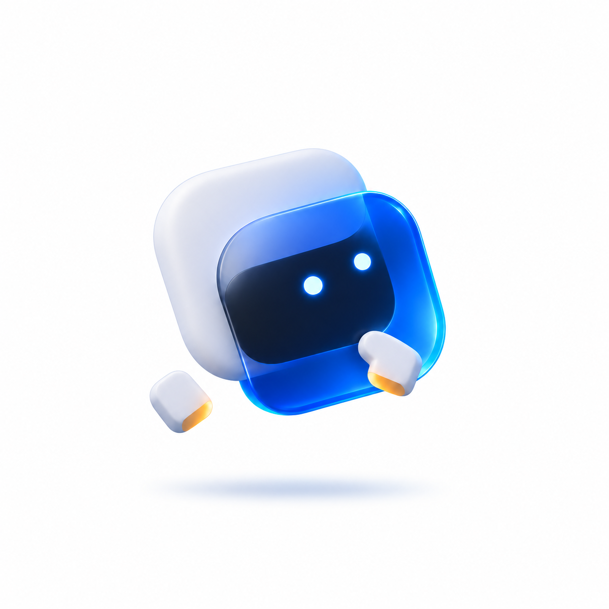
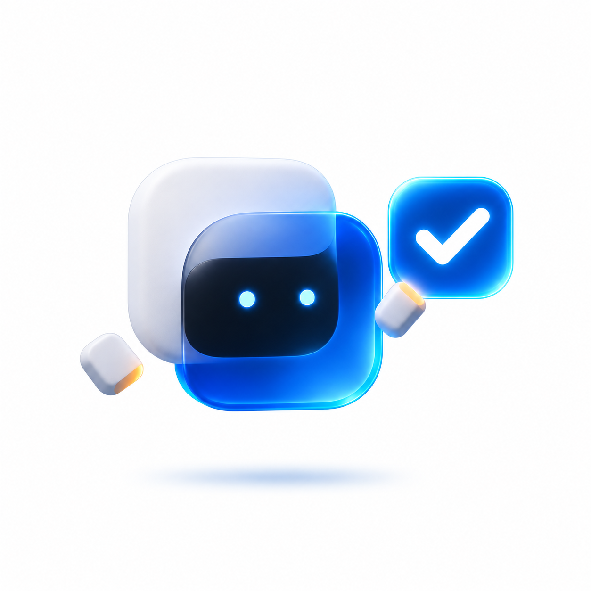

Clínica dental · Sitio + panel a medida
EuroBraces Center
Un sitio de conversión para una clínica de ortodoncia, con un panel para que el equipo lo administre sin depender de un desarrollador.
HTML/CSS/JSSupabaseSEO técnico
Ver caso →Cada caso combina criterio de producto, interfaz, arquitectura y ejecución. Aquí explicamos la decisión y el valor creado.

